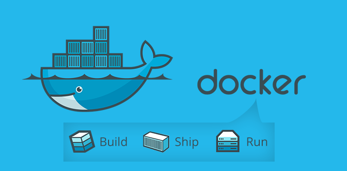

Docker
Created by NTUgEEkWhat is Docker?
Compared with VM


Advantages
- 資源用量少(disk, memory, cpu)
- 啟動速度快
- 效能高
How to install docker?
About the filesystem
docker 使用了 Copy on Write 的技術，可考慮使用 btrfs 格式的 filesystem 當作 docker 的工作目錄
一般來說 docker 的工作目錄是
/var/lib/docker
How to use docker?

Try it!
$ docker pull node
$ docker run --rm -it nodeUse Ctrl-D to exit.
A simple service
// server.js
'use strict';
let http = require('http');
let server = http.createServer((req, res) => {
res.write('Hello World!\n');
res.end();
});
server.listen(3000, () => {
console.log('server is listening port 3000...');
});Run it!
$ docker run -d --name hello -p 12345:3000 \
-v ${PWD}:/usr/src -w /usr/src node node server.js
$ docker ps
$ curl localhost:12345